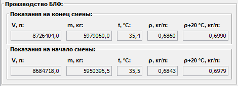

Описание области данных "Производство БЛФ"
Область данных "Производство БЛФ" отображает данные о БЛФ, произведенном за смену.
Эти данные поступают автоматически со счетчика БЛФ, отправленного на ТСП.
Внешний вид области "Производство БЛФ".

Система фиксирует показания счетчика отправленного БЛФ на начало и конец смены, и расчитывает данные о количестве произведенного БЛФ за смену.
Результаты производства БЛФ за смену отображаются в соответствующей области Итого за смену